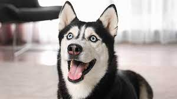

狗的種類介紹
哈士奇是北方地區雪橇型狗的總稱，他們的快速拉動的風格與其他雪橇犬不同。 他們是由速度最快的雪橇犬不斷交配的品種。相比之下，阿拉斯加雪橇犬是「最大和最有力的」雪橇犬，常被用於較重的承載。哈士奇被用於雪橇犬拉車比賽。近幾年來，有些業者一直在為冒險旅行者推銷狗拉雪橇的雪地旅遊徒步旅行。哈士奇現今也作為寵物飼養，某些團體正為退休賽車和冒險徒步的狗尋找新家。哈士奇也常被主人稱為二哈。

吉娃娃的性格極為神經質，絕大多數的吉娃娃喜歡到處吠叫，這也是吉娃娃之所以為人詬病的其中一點。由於牠們的體型很細小，身體十分瘦弱，所以極容易受到傷害。牠們細小的體型也為牠們帶來好處：因為牠們體型細小，使牠們能輕易適應現代的生活環境，包括市區和小公寓，適合老年人飼養。一般來說，小心飼養的話，吉娃娃犬都可以有長達17年及以上的壽命。

「柴犬」一詞在日文中意即「灌木叢狗」，發源於日本中央高地。在文獻上，為昭和初期的日本犬保存會的會刊「日本犬」所採用。「柴」是「打柴人」的「柴」，指小型的雜木。由於柴犬能巧妙地穿過雜木幫助打獵，而且紅褐色的毛色與枯萎的柴相似，故名。亦有人認為古語的「柴」，是把信州的柴村作為起源地。